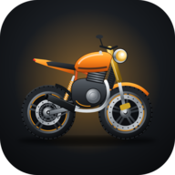

RideMind
Πολιτική απορρήτου
Τελευταία ενημέρωση: 5 Νοεμβρίου 2026 · English · Español
Η εφαρμογή RideMind («η εφαρμογή») αναπτύσσεται από ιδιώτη προγραμματιστή στην Ελλάδα. Υπεύθυνος επεξεργασίας και επικοινωνία: info@ridemind.eu. Η εφαρμογή δεν έχει διαφημίσεις και δεν χρησιμοποιεί εργαλεία ανάλυσης (analytics) ή παρακολούθησης.
Τι κρατάμε στον λογαριασμό σου
| Στοιχείο | Γιατί |
|---|---|
| Για να μπαίνεις στον λογαριασμό σου και να επαναφέρεις τον κωδικό σου. |
Αν μπεις με Google, παίρνουμε από εκεί μόνο το email σου. Τον κωδικό σου δεν τον βλέπουμε ποτέ: τον διαχειρίζεται το Firebase Authentication της Google.
RideMind Pro
Η αγορά του RideMind Pro γίνεται μέσω του Google Play: τα στοιχεία πληρωμής τα διαχειρίζεται η Google και δεν τα βλέπουμε ποτέ. Την αγορά την επιβεβαιώνει ο server μας απευθείας στο Google Play. Στον λογαριασμό σου κρατάμε μόνο:
- ότι το Pro είναι ενεργό, με τον αριθμό παραγγελίας και την ημερομηνία·
- ένα μη αναστρέψιμο αποτύπωμα (hash) του κωδικού αγοράς, ώστε μία αγορά να αντιστοιχεί σε έναν μόνο λογαριασμό·
- αν ξεκινήσεις τη δωρεάν δοκιμή, την έναρξη και τη λήξη της, ώστε να μη δίνεται δεύτερη φορά.
Για τις προσφορές (π.χ. Founding Rider) ελέγχεται η ημερομηνία δημιουργίας του λογαριασμού σου. Αν μια αγορά ακυρωθεί ή επιστραφούν τα χρήματα, το Google Play μάς ενημερώνει και το Pro αφαιρείται.
Backup στο cloud (προαιρετικό, Pro)
Μόνο αν το ενεργοποιήσεις εσύ από τις Ρυθμίσεις, αντίγραφο των δεδομένων της εφαρμογής (μηχανές, χιλιόμετρα, service, καύσιμα, έξοδα, βόλτες και διαδρομές, πάρκινγκ, ρυθμίσεις, επαφές και στοιχεία της κάρτας ανάγκης) αποθηκεύεται στον λογαριασμό σου, ώστε να το επαναφέρεις σε νέο κινητό. Το βλέπεις μόνο εσύ. Αν το απενεργοποιήσεις, δεν στέλνεται τίποτα νέο· αν διαγράψεις τον λογαριασμό σου, διαγράφεται και το backup.
Σφάλματα & προτάσεις
Αν μας στείλεις μήνυμα από Ρυθμίσεις (⚙️) › Σφάλματα & προτάσεις, αποθηκεύουμε το κείμενό σου, όσες εικόνες (screenshots) επισυνάψεις, το email σου (για να σου απαντήσουμε) και, αν το αφήσεις επιλεγμένο, τεχνικά στοιχεία: έκδοση εφαρμογής, μοντέλο κινητού, μάρκα και μοντέλο μηχανής και διάγνωση OBD. Τα χρησιμοποιούμε μόνο για να σου απαντήσουμε και για να διορθώνουμε την εφαρμογή. Τα μηνύματα τα βλέπεις μόνο εσύ και ο διαχειριστής.
Παρέα (προαιρετικό)
Αν χρησιμοποιήσεις την καρτέλα «Παρέα», δημιουργείς ένα προφίλ με username που διαλέγεις εσύ και, μόνο αν το επιλέξεις, τη μάρκα και το μοντέλο της μηχανής σου και την περιοχή σου (νομό ή πόλη, ποτέ ακριβή θέση). Το προφίλ το βλέπουν οι συνδεδεμένοι χρήστες του RideMind· το email σου δεν φαίνεται ποτέ. Αν προσθέσεις φωτογραφία προφίλ, τη βλέπουν μόνο τα μέλη των παρεών σου και μπορείς να την αφαιρέσεις όποτε θέλεις.
Μέσα σε μια παρέα, την οποία βλέπουν μόνο τα μέλη της, αποθηκεύονται:
- το όνομα της παρέας και τα μέλη της·
- οι κοινές βόλτες: προορισμός, ημερομηνία και ώρα, σημείο συνάντησης και η θέση του για τον καιρό, προαιρετικά η θέση του προορισμού, και οι απαντήσεις «Έρχομαι / Ίσως / Όχι»·
- η συζήτηση της βόλτας: τα μηνύματα, με το username και την ώρα·
- κατά τη ζωντανή βόλτα, μόνο αν την ξεκινήσεις εσύ: η τρέχουσα θέση σου, η ταχύτητα, τα χιλιόμετρα και αν πάτησες «Στάση εδώ», ανανεωμένα περίπου κάθε 20 δευτερόλεπτα. Δεν ανεβαίνει ολόκληρη η διαδρομή σου. Η θέση σου σβήνεται μόλις πατήσεις «Τέλος».
Πόσο κρατάνε: η κοινή βόλτα και η συζήτησή της σβήνονται μαζί όταν ο διοργανωτής πατήσει «Τέλος βόλτας» ή την ακυρώσει, αλλιώς αυτόματα 24 ώρες μετά την ώρα έναρξης. Το ίδιο ισχύει για θέσεις ζωντανής βόλτας που δεν σβήστηκαν.
Τα ονόματα τοποθεσιών που γράφεις σε μια κοινή βόλτα στέλνονται στην αναζήτηση τοποθεσιών του Open-Meteo, για να βρεθούν οι συντεταγμένες για τον καιρό.
Αν αναφέρεις περιεχόμενο ή χρήστη, η αναφορά (λόγος και σύντομο απόσπασμα του περιεχομένου) πηγαίνει μόνο στον διαχειριστή του RideMind, για έλεγχο. Ό,τι παραβιάζει τους κανόνες της Παρέας αφαιρείται. Αν φύγεις από μια παρέα, σβήνονται οι απαντήσεις, τα μηνύματα, η φωτογραφία και η θέση σου σε αυτήν. Αν διαγράψεις τον λογαριασμό σου, σβήνονται επιπλέον το προφίλ σου και οι παρέες που διαχειρίζεσαι.
Τι μένει μόνο στο κινητό σου
Οι μηχανές σου, χιλιόμετρα, service, καύσιμα, έξοδα, βόλτες και διαδρομές, αρχεία καταγραφής CSV, ενδείξεις OBD και πίεσης ελαστικών, θέση πάρκινγκ, επαφές ανάγκης και ιατρικά στοιχεία της κάρτας ανάγκης αποθηκεύονται μόνο στη συσκευή σου και δεν στέλνονται σε εμάς, εκτός αν ενεργοποιήσεις το backup στο cloud (Pro).
Άδειες της συσκευής
- Τοποθεσία: μόνο όσο η εφαρμογή είναι ανοιχτή, για καταγραφή βόλτας, πρόγνωση καιρού, πάρκινγκ, το μήνυμα ανάγκης και, μόνο όταν ξεκινάς ζωντανή βόλτα με την παρέα, για να βλέπουν τα μέλη της πού είσαι. Δεν χρησιμοποιείται στο παρασκήνιο.
- Συσκευές κοντά (Bluetooth): για σύνδεση με αντάπτορα OBD και αισθητήρες πίεσης ελαστικών.
- Αισθητήρες κίνησης: για ενδεικτική κλίση και ανίχνευση πτώσης.
- Ειδοποιήσεις: για βλάβες OBD και όρια οργάνων.
Για τον καιρό στέλνονται συντεταγμένες, χωρίς άλλα στοιχεία σου, στην υπηρεσία Open-Meteo. Ο χάρτης της διαδρομής φορτώνει εικόνες χάρτη από το OpenStreetMap (ή, αν δεν είναι διαθέσιμο, από την Esri)· η διαδρομή σου δεν στέλνεται πουθενά. Το μήνυμα ανάγκης (SMS) το στέλνεις εσύ από την εφαρμογή μηνυμάτων του κινητού.
Πού φυλάσσονται και για πόσο
Στο Google Firebase (Authentication, Cloud Firestore και Cloud Functions), σε servers της Ευρωπαϊκής Ένωσης, με κρυπτογράφηση κατά τη μεταφορά. Τα στοιχεία του λογαριασμού τα κρατάμε όσο υπάρχει ο λογαριασμός σου· οι κοινές βόλτες, τα μηνύματά τους και οι θέσεις της ζωντανής βόλτας σβήνονται το αργότερο 24 ώρες μετά την έναρξη της βόλτας. Δεν πουλάμε και δεν μοιραζόμαστε τα στοιχεία σου με κανέναν.
Τα δικαιώματά σου
Έχεις δικαίωμα πρόσβασης, διόρθωσης, διαγραφής και φορητότητας των στοιχείων σου (GDPR). Μπορείς να διαγράψεις οριστικά τον λογαριασμό σου από την εφαρμογή ή να το ζητήσεις όπως περιγράφεται στη σελίδα Διαγραφή λογαριασμού. Έχεις επίσης δικαίωμα καταγγελίας στην Αρχή Προστασίας Δεδομένων Προσωπικού Χαρακτήρα (dpa.gr).
Ανήλικοι
Η εφαρμογή απευθύνεται σε ενήλικες αναβάτες και δεν προορίζεται για παιδιά.
Αλλαγές
Αν αλλάξει αυτή η πολιτική, θα ενημερώσουμε την ημερομηνία στην κορυφή της σελίδας.
Privacy policy (English summary)
RideMind is developed by an independent developer in Greece. Contact: info@ridemind.eu. No ads, no analytics.
- Account: we store only your email address (Firebase Authentication / Cloud Firestore, EU servers).
- Feedback: if you send a bug report or suggestion, we store the message, any screenshots you attach, your email and, optionally, technical info (app version, device, motorcycle, OBD diagnostics) to reply and fix issues.
- RideMind Pro: purchases go through Google Play; we never see payment details. Our server verifies the purchase directly with Google Play. We store only that Pro is active (order number and date), a one-way hash of the purchase token so a purchase is linked to a single account, and the free-trial start and end dates. Offers (e.g. Founding Rider) check your account creation date. Refunded or cancelled purchases remove Pro.
- Cloud backup (optional, Pro): only if you turn it on, a copy of your app data (bikes, service, fuel, expenses, rides and routes, parking, settings, emergency contacts and medical info) is stored in your account so you can restore it on a new phone. Only you can access it; it is deleted with your account.
- Crew (optional): if you use the Crew tab, you create a profile with a username you choose and, only if you opt in, your bike's make and model and your region (never an exact location); signed-in RideMind users can see it, your email is never shown. An optional profile photo is visible only to members of your crews. Inside a crew, visible only to its members, we store the crew name and members, group rides (destination, date and time, meeting point and its location for the weather, optionally the destination location) with RSVPs, and the ride chat (messages with username and time). During a live ride, only if you start it, your current position, speed, distance and "Stop here" status are shared with the crew about every 20 seconds; your full route is never uploaded and your position is deleted when you tap "End". A group ride and its chat are deleted when the organiser ends or cancels it, otherwise automatically 24 hours after its start time. Place names you type in a group ride are sent to Open-Meteo's geocoding to find coordinates for the weather. Reports go only to the RideMind admin. Leaving a crew deletes your RSVPs, messages, photo and position in it; deleting your account also deletes your profile and the crews you manage.
- On your device only (unless you turn on cloud backup): motorcycles, service, fuel, expenses, rides and routes, CSV logs, OBD and tyre-pressure readings, parking spot, emergency contacts and emergency medical info.
- Permissions: location (foreground only, for rides, weather, parking, emergency message and, only during a live crew ride, sharing your position with the crew), nearby devices/Bluetooth (OBD adapter, tyre sensors), motion sensors (lean angle, crash detection), notifications.
- Weather requests send coordinates only to Open-Meteo. Route maps load map images from OpenStreetMap (or Esri as a fallback); your route is never uploaded. Data is stored on Google Firebase (Authentication, Cloud Firestore, Cloud Functions) in the EU. We never sell or share your data.
- Deletion: delete your account in the app (Settings ⚙️ › Account › Delete account) or see Delete account.
Política de privacidad (resumen en español)
RideMind lo desarrolla un desarrollador independiente en Grecia. Contacto: info@ridemind.eu. Sin anuncios ni analítica.
- Cuenta: solo guardamos tu email (Firebase Authentication / Cloud Firestore, servidores en la UE).
- Sugerencias y errores: si nos escribes, guardamos el mensaje, las capturas que adjuntes, tu email y, si lo dejas marcado, datos técnicos (versión, móvil, moto, diagnóstico OBD) para responderte y corregir la app.
- RideMind Pro: la compra se hace en Google Play y nunca vemos tus datos de pago. Nuestro servidor verifica la compra con Google Play. Guardamos solo que Pro está activo (número de pedido y fecha), un hash irreversible del token de compra para vincularla a una sola cuenta, y las fechas de la prueba gratuita. Las ofertas (p. ej. Founding Rider) comprueban la fecha de creación de la cuenta. Si la compra se reembolsa o cancela, Pro se retira.
- Copia en la nube (opcional, Pro): solo si la activas, una copia de los datos de la app se guarda en tu cuenta para restaurarla en otro móvil. Solo tú puedes verla y se borra con tu cuenta.
- Grupo (opcional): creas un perfil con un nombre de usuario y, si quieres, tu moto y tu región (nunca una ubicación exacta); tu email nunca se muestra. La foto de perfil opcional solo la ven los miembros de tus grupos. Dentro de un grupo, visible solo para sus miembros, guardamos el nombre y los miembros, las rutas de grupo (destino, fecha y hora, punto de encuentro y su ubicación para el tiempo, opcionalmente la ubicación del destino) con las respuestas, y el chat de la ruta. Durante una ruta en directo, solo si la inicias tú, tu posición, velocidad, distancia y estado «Parada» se comparten con el grupo cada ~20 segundos; nunca se sube tu ruta completa y tu posición se borra al pulsar «Fin». La ruta de grupo y su chat se borran cuando el organizador la termina o la cancela y, si no, automáticamente 24 horas después de su inicio. Los nombres de lugares que escribes se envían al geocodificador de Open-Meteo. Las denuncias solo las ve el administrador. Si sales de un grupo, se borran tus respuestas, mensajes, foto y posición en él.
- Solo en tu móvil (salvo copia en la nube): motos, mantenimiento, combustible, gastos, rutas, registros CSV, lecturas OBD y de presión, aparcamiento, contactos y datos médicos de emergencia.
- Permisos: ubicación (solo con la app abierta: rutas, tiempo, aparcamiento, mensaje de emergencia y, solo en una ruta en directo, compartir tu posición con el grupo), dispositivos cercanos/Bluetooth (OBD, sensores de presión), sensores de movimiento (inclinación, detección de caídas), notificaciones.
- El tiempo envía solo coordenadas a Open-Meteo. Los mapas cargan imágenes de OpenStreetMap (o Esri). Nunca vendemos ni compartimos tus datos.
- Eliminación: borra tu cuenta en la app (Ajustes ⚙️ › Cuenta › Eliminar cuenta) o consulta Eliminar cuenta. Tienes los derechos del RGPD y puedes reclamar ante la autoridad de protección de datos.
Αρχική · Όροι χρήσης · Πολιτική απορρήτου · Διαγραφή λογαριασμού · info@ridemind.eu
© 2026 RideMind · Με την επιφύλαξη παντός δικαιώματος · All rights reserved.